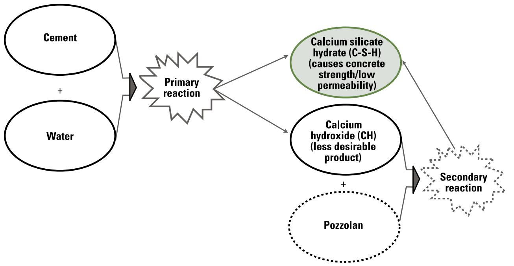
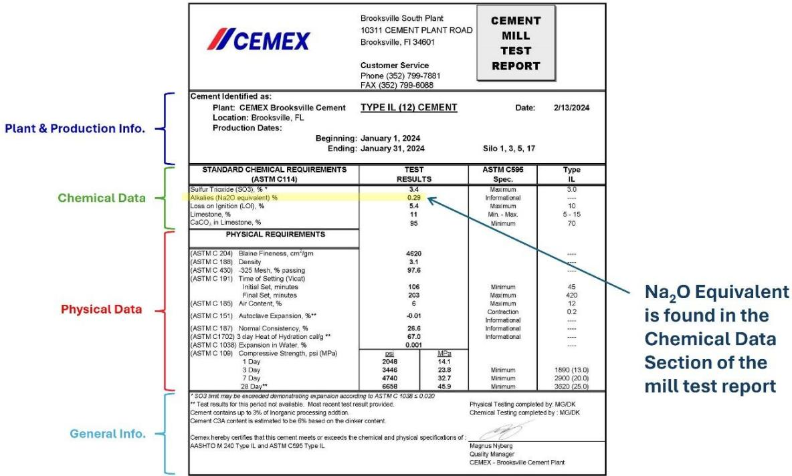

Cementitious Materials
Cementitious materials are hydraulic binders that harden through irreversible chemical reactions with water, forming a solid matrix that binds aggregates into concrete or mortar. The fundamental mechanism involves the hydration of calcium silicates and aluminates to produce calcium-silicate-hydrate gel, which provides strength and impermeability, alongside calcium hydroxide as a secondary phase [1] [2]. Performance is governed by the water-to-cement ratio, which controls capillary porosity and permeability, as well as the use of supplementary cementitious materials that refine pore structure through pozzolanic reactions [1] [3]. These materials are classified by their chemical composition and intended performance characteristics, balancing trade-offs between early strength development, workability, setting time, and long-term durability against environmental stresses [1] [4].
Cementitious Materials form the binding backbone of modern construction through chemical reactions and engineered compositions. Cement Production generates the hydraulic binder via high-temperature clinker formation, establishing the foundational component for all downstream applications. This binder undergoes specific transformations in Cement Chemistry, where fundamental hydration reactions of calcium silicates and aluminates govern setting, strength development, and long-term durability. Engineers apply these principles in Concrete Mixture Design to optimize the proportioning of binders and supplementary materials, ensuring the microstructural integrity required for durable construction. Sustainable SCMs further refine this system by partially replacing Portland cement clinker with mineral or industrial by-product additives, enhancing both performance and sustainability while lowering environmental impact. The ultimate measure of success is Concrete Durability, which represents the essential performance outcome where the hardened matrix withstands environmental degradation and service stresses to preserve structural integrity over time.
Sources (4)
Sub-concepts (5)
Key findings
- Reduced the clinker fraction in concrete mixes by increasing the share of supplementary cementitious materials (SCMs) and optimizing aggregate gradations to lower greenhouse-gas emissions and embodied carbon [1].
- Identified that durability is governed primarily by permeability, which is controlled by the paste matrix and its bond to aggregates, requiring low water-to-cement ratios and adequate curing to limit pore connectivity [1].
- Demonstrated that incorporating SCMs lowers calcium hydroxide levels and fills capillary voids, thereby suppressing expansive reactions with deicing chlorides and enhancing frost durability in cementitious pavements [3].
- Established a critical saturation threshold of approximately 85% for freeze-thaw damage initiation, highlighting that air entrainment effectiveness depends on tightly controlled void system consistency rather than just air content volume [3].
- Revealed that lower water-to-cement ratios serve as the primary lever for mitigating joint deterioration by reducing paste permeability, limiting fluid transport, and raising strength against environmental stresses [3].
- Reported that material availability and supply chain disruptions are decisive schedule factors, necessitating early mapping of local sources and lot-specific certification to prevent redesigns or delays [2].
- Showed that the shifting landscape of SCMs introduces chemical and physical variability, requiring early hydration testing, backup material plans, and strict compliance with standards to manage performance risks [2].
- Identified alkali-silica reaction (ASR) as a principal durability challenge in airport pavements, mitigated by limiting total alkali loading, judicious SCM selection, and the use of lithium nitrate admixtures when reactive aggregates are present [2].
Hydration Mechanisms and Chemical Performance
Evidence: 4 reports (1 primary)
Hydration is the irreversible chemical reaction between hydraulic binders and water that transforms a plastic paste into a solid, aggregate-binding matrix through the formation of calcium-silicate-hydrate gel and calcium hydroxide [1] [2]. The rate and extent of this reaction are governed by cross-cutting factors including cement chemistry, particle fineness, ambient temperature, and the presence of chemical admixtures or supplementary materials [1]. Performance outcomes such as strength development, setting time, and microstructural density are fundamentally controlled by the water-to-binder ratio, which dictates capillary porosity, alongside the specific interactions of supplementary cementitious materials that refine pore structure over time [1] [3].
The following figure illustrates how these hydration processes influence the properties of hardened concrete.
 Implications of Cement Hydration for Hardened Concrete Properties [1]
Implications of Cement Hydration for Hardened Concrete Properties [1]
The figure illustrates the five stages of cement hydration—Mixing, Dormancy, Hardening, Cooling, and Densification—mapped against a heat evolution curve over time. It specifically highlights how the stability of the air-void system is influenced by chemical admixtures and handling during these hydration phases, which directly impacts concrete durability against freezing and thawing. The diagram demonstrates that while hydration drives the formation of the solid matrix, specific performance characteristics like air content stability are governed by interactions between supplementary cementitious materials and chemical admixtures.
State of the art — Modern practice has shifted from legacy recipe-based designs to a performance-oriented paradigm that engineers binder systems to explicitly manage trade-offs between early-age properties like strength and long-term microstructural refinement [1]. The field relies on two-stage hydration strategies using supplementary cementitious materials to consume calcium hydroxide and densify the paste matrix, thereby improving durability while reducing clinker demand [1]. Current consensus integrates blended cements with high-range water reducers and rigorous curing regimes to balance early workability with long-term permeability control, guided by life-cycle analysis for sustainability [1].
The figure below illustrates how pozzolans influence this critical process of cement hydration.

Effect of pozzolans on cement hydration [1]The figure illustrates the chemical process where cement and water undergo a primary reaction to form calcium silicate hydrate (C-S-H) and calcium hydroxide (CH). It depicts how pozzolans react with the less desirable product, CH, in a secondary reaction to produce additional C-S-H.
Findings from the reports
- Identified clinker production as the dominant environmental burden of cementitious materials, demonstrating that meaningful reductions in greenhouse-gas emissions and energy use require lowering the clinker fraction through optimized mixtures and increased supplementary cementitious material (SCM) usage [1].
- Showed that sustainability gains from using locally sourced recycled or waste materials are amplified by reduced transport emissions, though these benefits remain highly context-dependent and require project-specific evaluation [1].
- Observed that reducing cementitious content not only lowers embodied carbon but also enhances functional performance in alternative systems such as roller-compacted and pervious concrete [1].
- Established that the durability of all cementitious systems is governed by permeability, which is controlled primarily by the paste matrix and its bond to aggregates, necessitating low water-to-cement ratios, adequate curing, and appropriate SCM dosages to limit pore connectivity [1].
- Revealed cross-cutting challenges of material incompatibility linked to sulfate imbalance, fineness, temperature, or rapid admixture reactions that cause premature stiffening or delayed setting, underscoring the need for trial batching and careful monitoring [1].
- Demonstrated that managing on-site variables such as water addition, air-entrainment, and temperature is critical because these factors directly influence workability, early strength development, and long-term durability [1].
Novelty & rigor — Novelty lies in shifting from static recipe-based design to a performance-driven framework that dynamically tailors proportions to locally available materials and waste streams, while integrating functional surface technologies like photocatalytic nanoparticles for self-cleaning capabilities [1]. Methodological rigor is established through the use of miniature insulated calorimetry to isolate hydration heat from external influences, alongside standardized absolute-volume proportioning and strict batching tolerances that ensure reproducible binder system performance across diverse local contexts [1].
The following figure illustrates a typical field semi-adiabatic temperature monitoring system for mortar.
 A portable field semi-adiabatic temperature monitoring system for mortar. [1]
A portable field semi-adiabatic temperature monitoring system for mortar. [1]
The apparatus consists of a portable case containing four cylindrical cavities designed to hold specimens, with one cavity covered by a cap and the others open. This equipment is used for semi-adiabatic calorimetry to observe hydration kinetics and measure comparative heat gain.
Reported values
| Parameter | Value | Context | Source |
|---|---|---|---|
| adequate SCM amount for sulfate resistance | 20 percent% | SCM proportion of the cementitious system | [1] |
| air-void spacing factor for adequate protection | 0.008 in. | spacing factor considered adequate to protect concrete | [1] |
| autogenous shrinkage significance threshold | 0.40 | w/cm ratio below which autogenous shrinkage becomes important | [1] |
| calcium oxychloride limit (AASHTO T 365) | 0.5 oz CAOXY/3.5 oz cementitious paste | calcium oxychloride determination for mixtures using CaCl2 or MgCl2 | [1] |
| Class F fly ash dosage for sulfate resistance | 15 to 25 percent% | Use Class F fly ash for sulfate resistance | [1] |
| compressive strength loss per unit entrained air | 5 percent% | concrete compressive strength loss per 1 percent entrained air | [1] |
| fly ash usage in ready-mixed concrete | 50 percent% | Fly ash usage in ready-mixed concrete | [1] |
| fly ash, slag cement, and silica fume maximum proportions (ACI 318) | 25, 50, and 10 percent% | maximum proportion by mass of cementitious materials per ACI 318 (2014) building code | [1] |
| high early-strength concrete cement content | 675 to 850 lb/yd3 | High cement content in High early-strength concrete | [1] |
| high early-strength concrete w/cm ratio | 0.37 to 0.45 | Low w/cm ratio in High early-strength concrete by mass | [1] |
| Low-calcium Class F fly ash reactivity expansion reduction | 70 percent% | reduced reactivity expansion in Low-calcium Class F fly ashes | [1] |
| paste content limit (AASHTO PP 84) | 25 percent% | Paste content by volume of concrete per AASHTO PP 84 | [1] |
| Portland cement alkali content limit for ASR control | 0.60 percent% | equivalent sodium oxide in portland cement to control ASR | [1] |
| Portland cement fineness (Type I) | 1,464.7 to 1,953.0 ft²/lb | Typical Type I cements | [1] |
| SCM replacement of portland cement | 30 percent% | increasing the replacement of portland cement with high-quality SCMs | [1] |
11 more distinct values omitted here; the full span-verified set is in the quantities sidecar.
Implications — Designers must treat hydration as a system-wide optimization problem, balancing the accelerated early-age heat and strength development of fine cements against the long-term microstructural densification provided by slower-hydrating supplementary binders [1]. Practitioners are required to rigorously manage early-age constructability constraints, such as setting time and temperature evolution, through precise curing regimes and quality control to ensure that rapid chemical reactions do not compromise final durability [1]. The industry must shift toward integrated specifications that unify material chemistry with operational practices, ensuring that mixing equipment and injection parameters are selected to support the specific hydration kinetics of low-carbon binder systems [4].
The following figure illustrates how specific chemical reactions contribute to the early heat spike observed during cement hydration.
 Heat evolution curve of cement hydration showing the dormant period and subsequent reaction phases. [1]
Heat evolution curve of cement hydration showing the dormant period and subsequent reaction phases. [1]
The figure displays a plot of heat generation over time, characterized by an initial sharp spike followed by a prolonged period of low activity known as the dormant period. This mechanism is a fundamental aspect of cement chemistry where the formation of specific hydrates governs the setting time and heat evolution of hydraulic binders.
Limitations — The inherent variability in cement chemistry and fineness, often masked by averaged mill certifications, creates risks of incompatibility such as premature stiffening or delayed set that cannot be predicted without testing the specific plant materials [1]. Achieving desired chemical performance requires rigorous trial batching because standard mix designs fail to account for context-sensitive factors like local material availability and site-specific handling conditions that can negate anticipated durability gains [1].
Durability Management and Environmental Trade-offs
Evidence: 3 reports (3 primary)
Research problem — The reliability of cementitious inputs cannot be assumed, as variations in composition and availability disrupt workability and long-term durability, thereby threatening schedule adherence and lifecycle costs in critical infrastructure projects [2]. Joint deterioration driven by simultaneous freeze-thaw stresses and chemical attack from deicing salts creates a complex durability challenge that requires balancing low permeability against workability, cost, and early-strength requirements [3].
The following figure illustrates how the degree of saturation influences stiffness degradation resulting from freeze-thaw damage.
 Influence of the degree of saturation on relative stiffness degradation due to freeze-thaw damage. [3]
Influence of the degree of saturation on relative stiffness degradation due to freeze-thaw damage. [3]
The figure plots Relative Stiffness against Degree of Saturation (%) for two concrete mixtures with different air-void contents, demonstrating that stiffness remains high until a critical saturation threshold is exceeded. Once the degree of saturation exceeds this critical point, damage initiates in the material regardless of the quantity and quality of the air system.
State of the art — The industry has shifted toward performance-based specifications that permit blended cements and supplementary materials to reduce clinker content, provided they meet strict physical criteria while managing trade-offs in workability and alkali-silica reaction risk [2]. Durability management now centers on controlling the degree of saturation below critical thresholds through air-entrainment and low water-to-cement ratios, while simultaneously mitigating chemical attacks by using supplementary cementitious materials to suppress expansive reactions with deicing salts [3]. Current practice relies on rigorous quality-control protocols, including trial batching and early-hydration testing, alongside probabilistic modeling to balance environmental goals with the need for reliable service life under combined physical and chemical stresses [2] [3].
The following figure illustrates a sample mill test report that highlights the specific location of alkali content within the material.

Sample mill test report showing location of alkali content (source: CEMEX). [2]The figure displays a standard mill test report from the CEMEX Brooksville South Plant, which lists chemical and physical properties for Type IL cement. A specific row labeled “Alkalis (Na2O equivalent) %” is highlighted to demonstrate how manufacturers report this data on the document. The cement manufacturer’s mill test report readily provides this information, allowing users to determine the total alkalis available to support ASR.
Findings from the reports
- Identified supply chain reliability, blended cement behavior, and supplementary cementitious material (SCM) variability as dominant cross-cutting factors that require holistic management through early testing and backup plans [2].
- Demonstrated that alkali-silica reaction (ASR) remains the principal durability challenge in airport pavements, requiring strict control of total alkali loading and judicious SCM selection or lithium nitrate admixtures for mitigation [2].
- Showed that variability in air-void system quality dramatically shortens predicted service life against freeze-thaw damage, highlighting the need for tight proportion control rather than just increased air content [3].
- Revealed that de-icing chlorides trigger the formation of expansive calcium oxychloride salts within the cement matrix, which seals pore pathways but can also cause direct binder damage and alter transport properties depending on cement type [3].
- Established that controlling the water-to-cement ratio is the primary lever for mitigating joint deterioration by reducing paste permeability, limiting fluid transport, and raising strength against both freeze-thaw stresses and salt-induced reactions [3].
- Found that incorporating supplementary cementitious materials lowers calcium hydroxide levels and fills capillary voids to suppress expansive salt formation, though higher dosages may lower pH and increase reinforcement corrosion risk [3].
- Documented a cross-cutting incompatibility risk where certain water-reducing admixtures accelerate aluminate hydration while retarding silicate hydration, causing early stiffening followed by delayed set and slower strength development [1].
- Observed that cement source markedly influences heat output and setting behavior when mixed with the same admixture, necessitating practical mitigation actions such as adjusting replacement levels, changing cement type, or extending mixing time [1].
Novelty & rigor — Research introduces a holistic quality-control framework that integrates performance-based cement specifications, routine semi-adiabatic calorimetry, and continuous supplier monitoring to link material certification directly with long-term durability goals [2]. A distinctive methodological advance treats durability challenges as a unified probabilistic design problem by coupling sorption-based moisture uptake models with Monte Carlo simulations of mix variability to forecast service life and identify internal chemical sealing mechanisms [3]. Reproducibility is ensured through tightly controlled chains of material specifications, documented test data, and repeatable mixing procedures that standardize binder sourcing, mix-design approval, trial batching, and comprehensive documentation across the cementitious system [2] [3].
Reported values
| Parameter | Value | Context | Source |
|---|---|---|---|
| alkali loading limit | 3.0 lb/yd3 | concrete mixture alkali loading | [2] |
| alkali loading limit (metric) | 1.8 kg/m3 | concrete mixture with potentially reactive aggregate per ASTM C311 | [2] |
| available alkali content limit | 3% | cementitious materials (fly ash, slag, pozzolan) for ASR mitigation per FAA AC 150/5370-10H | [2] |
| average particle size limit | 6 microns | ultra fine fly ash/pozzolan | [2] |
| Blaine fineness (ordinary portland) | 4000 cm2/g | ordinary portland cement Blaine fineness | [2] |
| Blaine fineness (Type IL) | 5000-5500 cm2/g | Type IL cement Blaine fineness | [2] |
| cement total alkali content range | 0.2% to 1.5% | Na2O equivalent in cement | [2] |
| fineness increase | 20 percent | grinding of Type IL cements relative to ordinary cement | [2] |
| C-SUD mix maximum w/c ratio | 0.45 | high-durability mix C-SUD | [3] |
| C-SUD mix target w/c ratio | 0.40 | high-durability mix C-SUD | [3] |
| CaCl concentration | 12 percent | at 23°C | [3] |
| calcium chloride content in calcium oxychloride formation | 12 percent CaCl | at 23°C | [3] |
| Class C fly ash replacement rate | 30–35 percent | cement replacement rate recommendation | [3] |
| Class C fly ash replacement rate (combined mix) | 20 percent | in combination with 20 percent slag | [3] |
| Class F fly ash replacement rate | 20–25 percent | cement replacement rate recommendation | [3] |
20 more distinct values omitted here; the full span-verified set is in the quantities sidecar.
Across the reviewed reports, durability management is fundamentally constrained by the interplay between mix proportioning variables—specifically water-to-cement ratio and air-void system consistency—and the chemical reactivity of the binder matrix under environmental stress. While supplementary cementitious materials are employed to mitigate specific degradation mechanisms such as alkali-silica reaction and calcium oxychloride formation by consuming reactive phases, their use introduces significant variability in hydration kinetics and workability that complicates performance predictability. The collective evidence indicates a critical trade-off where optimizing for chemical resistance or freeze-thaw resilience through lower permeability or air entrainment often conflicts with the need to manage supply chain reliability and the inherent variability of blended binders. [1] [2] [3]
Implications — Project planning must treat binder supply as a systemic risk, requiring owners to secure pre-approved contingency sources and contractors to manage logistics that balance local availability against the schedule certainty of longer hauls [2]. Designers must evaluate total alkali loading across the entire mix rather than relying on nominal cement values, necessitating the use of low-alkali binders or specific admixtures to control alkali-silica reaction [2]. Mix specifications should mandate tight controls on water-to-cement ratios and air-void variability, while prescribing supplementary cementitious material thresholds to mitigate chemical attack and freeze-thaw damage [3].
Limitations — Reliable local availability of cementitious materials cannot be assumed, forcing contractors to maintain contingency plans rather than switch suppliers due to the delays and re-design requirements triggered by material changes [2]. Current analytical shortcuts for alkali-silica reaction risk ignore alkalinity contributions from supplementary materials, de-icing salts, or groundwater, potentially underestimating durability threats [2]. The critical degree of saturation is not a fixed threshold but varies widely based on air-void quality, making accurate field predictions inherently uncertain and dependent on precise measurement [3]. Sorption analysis models assume perpetual water contact with no drying, limiting their relevance to most structures that experience wet-dry cycles [3]. Durability outcomes are highly conditional on the specific type, concentration, and temperature of de-icing salts used, with insufficient substantiation for the aggressiveness of certain agents [3]. While supplementary materials can mitigate deleterious salt formation, their use lowers concrete pH, which may compromise corrosion protection for embedded steel and restricts high-supplementary-material mixes to plain or unreinforced pavements [3].
The following figure illustrates the phase diagrams showing the temperature conditions required for calcium oxychloride formation in hydrated cement paste exposed to calcium chloride solutions.
 Phase diagram illustrating the temperature for calcium oxychloride formation when hydrated cement paste is brought into contact with calcium chloride solution. [3]
Phase diagram illustrating the temperature for calcium oxychloride formation when hydrated cement paste is brought into contact with calcium chloride solution. [3]
The figure displays a phase diagram plotting Temperature against CaCl2 Concentration, delineating regions where various solid phases coexist with solutions or ice. This diagram illustrates a specific durability threat mechanism where chloride exposure alters the internal chemistry and fluid transport properties of cementitious materials.
Material Selection, Sourcing, and Placement Logistics
Evidence: 1 report (1 primary)
Research problem — Selecting cementitious materials for pavement preservation requires balancing conflicting performance demands, as binders must simultaneously provide high strength and wear resistance under traffic loads while maintaining sufficient fluidity for placement into narrow gaps without excessive water addition [4]. Effective material sourcing and placement logistics are hindered by practical constraints, including inadequate mixing equipment that fails to generate necessary agitation for pozzolanic grouts and low injection pressures that risk slab uplift or premature reaction due to environmental sensitivity [4].
State of the art — Material selection for slab stabilization has shifted from traditional cement grouts to expansive polyurethane binders, while specialized hydraulic cements such as calcium aluminate and calcium sulfoaluminate are preferred for rapid-strength repair applications requiring specific durability traits [4]. Sourcing and mixing logistics now mandate dedicated plants with high-shear colloidal mixers to ensure uniform dispersion, explicitly avoiding low-agitation drum mixers or bulk transport equipment that compromise material integrity through excess water or particle agglomeration [4]. Placement technology relies on positive-displacement injection pumps operating at controlled low pressures and flow rates to achieve uniform fill without slab uplift, with strict adherence to moisture and temperature controls for advanced systems like magnesium phosphate concrete [4].
Findings from the reports
- Evaluated the performance trade-offs among specialized repair binders, revealing that while gypsum-based cements offer rapid setting they are unsuitable for reinforced applications, whereas calcium sulfoaluminate cements provide a superior combination of rapid strength gain, high sulfate resistance, and low shrinkage without conversion issues [4].
- Demonstrated that production reliability for pavement stabilization grouts depends critically on using dedicated plants with precise volumetric or gravimetric proportioning and colloidal mixers to avoid the excess water demand and particle agglomeration caused by standard ready-mix trucks or paddle-type drum mixers [4].
- Observed that durability of pavement cementitious layers requires a dense, uniform mortar with consistent depth, necessitating a comprehensive testing regime for pozzolanic blends to ensure flow-cone times and early-age strength meet specific performance thresholds [4].
- Found that conventional concrete remains the preferred material for dowel-bar retrofits due to its low cost, availability, and thermal compatibility, provided strict water-to-cement control is maintained to limit shrinkage [4].
Novelty & rigor — The primary innovation lies in integrating precise volumetric proportioning with high-shear colloidal mixing and real-time uplift monitoring to ensure the reliability of cementitious repairs, rather than developing new binder chemistries [4]. Reproducibility is achieved by strictly controlling material acquisition through standardized pozzolan specifications and enforcing rigorous placement protocols that utilize low-pressure positive-displacement pumping to maintain mix integrity during injection [4].
The following figure illustrates the specific order of grout pumping employed to address settlement issues.
 Plan view of a concrete slab showing the recommended sequence for pumping grout to correct settlement. [4]
Plan view of a concrete slab showing the recommended sequence for pumping grout to correct settlement. [4]
The figure displays a plan view of a pavement section with numbered injection points indicating the order in which material should be pumped to lift and level a settled slab.
Reported values
| Parameter | Value | Context | Source |
|---|---|---|---|
| compressive strength | 600 lbf/in2 | at 7 days | [4] |
| cure time before traffic | at least 3 hours | after grouting | [4] |
| flow cone time | 10- to 16-second | fly ash grouts | [4] |
| injection pressure | 25 and 200 lbf/in2 | during grout injection | [4] |
| maximum aggregate size | 0.375 in. | sand and aggregate | [4] |
| pumping rate | about 1.5 gallons per minute | low pumping rate | [4] |
| setting time | 20 to 40 minutes | Gypsum-based cements | [4] |
| shrinkage | as low as 200 macrostrains | CSA cements at 28 days | [4] |
| ultimate compressive strength | 1,500 to 4,000 lbf/in2 | grout | [4] |
Limitations — The suitability of repair materials cannot be assumed without a comprehensive quality-control program that verifies properties such as pozzolan quality, early-age strength, and flowability before placement begins [4]. Practical constraints in sourcing and logistics include strict limitations on mixing technology to prevent non-uniform dispersion or particle agglomeration, as well as requirements for specific pump types and pressure ranges during placement [4]. Material selection is further restricted by environmental sensitivities, such as the need to halt work in low ambient temperatures and the requirement for dry placement of certain cement types, alongside reservations regarding chemical compatibility with existing structures [4].
Related concepts
In this hierarchy
- Child: Cement Chemistry
- Child: Concrete Mixture Design
- Child: Sustainable SCMs
- Child: Cement Production
- Child: Concrete Durability
Related by shared evidence
- Aggregate Management — shares 4 reports
- Cement Chemistry — shares 4 reports
- Concrete Mixture Design — shares 4 reports
- Concrete Production — shares 4 reports
- Concrete Testing — shares 4 reports
- Cracking Mitigation — shares 4 reports
- Joint Maintenance — shares 4 reports
- Joint Sealing — shares 4 reports
Similar topics
- Sustainable SCMs
- Material Testing
- Pavement Design
- Other
- Reinforcement Techniques
- Surface Textures
- Concrete Production
- Pavement Management
References
- Integrated Materials and Construction Practices for Concrete Pavement: A STATE-OF-THE-PRACTICE MANUAL (2019)
- Best Practices Manual: Quality Control and Quality Acceptance of Concrete Airport Pavement (2025)
- Guide to the Prevention and Restoration of Early Joint Deterioration inConcrete Pavements (2016)
- Concrete Pavement Preservation Guide (Third Edition) (2022)
Feedback on this page